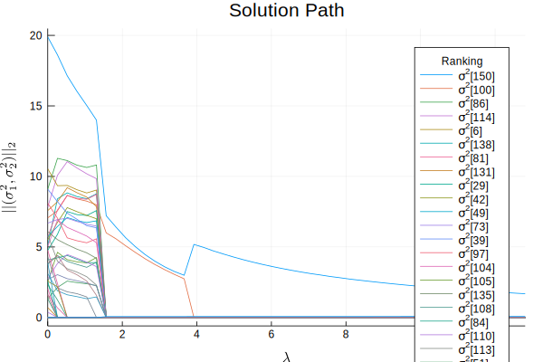
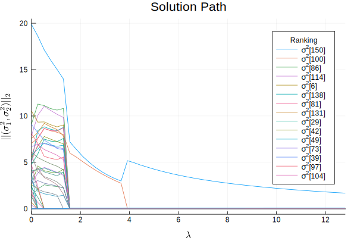

VCintModel
Machine information
versioninfo()Julia Version 1.3.1
Commit 2d5741174c (2019-12-30 21:36 UTC)
Platform Info:
OS: macOS (x86_64-apple-darwin18.6.0)
CPU: Intel(R) Core(TM) i5-6267U CPU @ 2.90GHz
WORD_SIZE: 64
LIBM: libopenlibm
LLVM: libLLVM-6.0.1 (ORCJIT, skylake)Data
Suppose we have the following variables:
y: $324$-by-$1$ vector of phenotype of interestX: $324$-by-$1$ vector indicating sex of each individualG: $150$-by-$1$ vector whose $i$-th element is a $324$-by-$q_i$ genotype matrix (matrix of minor allele counts) for gene $i,$ where $i=1,\ldots, 150$ and $q_i$ is the number of variants for gene $i$trtvec: $324$-by-$1$ vector indicating treatment status of each individual.
These variables are saved in .jld2 file. First, read in variables using JLD2 package.
using JLD2
@load "/Users/juhyun-kim/Box Sync/workspace/vcselect/data/VCSEL/SNPset_interaction.jld2" y y2 X G V trtvec6-element Array{Symbol,1}:
:y
:y2
:X
:G
:V
:trtvecOur phenotype vector:
y324-element Array{Float64,1}:
-0.40911273847444835
-0.0597995644528963
0.02798994878695149
-0.5810287222548617
0.4325440331155418
0.048256153207898195
-0.27027696763685594
0.10490944338119751
-0.7799009563553139
-0.20593444247247622
0.5520065403740653
-0.10092686337307819
0.5983104367265357
⋮
0.03739468023738035
0.47352506877371714
-0.22836115042409924
-0.3876214190551975
0.10326243849550518
-0.4882830145406528
-0.06903684417417116
0.09798041795966334
-0.1480073641765541
-0.29900800903355274
-0.008878790322644575
-0.09571535379121696Covariate matrix indicating sex:
X324-element Array{Float64,1}:
1.0
2.0
2.0
1.0
2.0
1.0
2.0
2.0
2.0
1.0
2.0
1.0
1.0
⋮
1.0
1.0
2.0
2.0
2.0
1.0
1.0
2.0
1.0
1.0
1.0
2.0Vector of genotype matrix for each gene:
G150-element Array{Array{Float64,2},1}:
[2.0 0.0 … 2.0 2.0; 2.0 1.0 … 1.4485981308411215 2.0; … ; 2.0 0.0 … 1.0 2.0; 2.0 0.0 … 2.0 2.0]
[2.0 2.0 … 2.0 2.0; 2.0 1.0 … 1.0 0.0; … ; 2.0 1.0 … 1.0 0.0; 2.0 2.0 … 1.0 2.0]
[2.0 2.0 … 0.0 2.0; 2.0 2.0 … 2.0 2.0; … ; 2.0 2.0 … 1.0 2.0; 2.0 2.0 … 0.0 1.0]
[2.0 1.0 … 0.0 2.0; 2.0 1.0 … 0.0 2.0; … ; 2.0 0.0 … 1.0 2.0; 1.0 1.0 … 1.0 2.0]
[1.0 2.0 … 0.0 2.0; 1.0 2.0 … 1.0 2.0; … ; 0.0 2.0 … 1.0 2.0; 2.0 2.0 … 0.0 2.0]
[2.0 2.0 … 1.0 2.0; 2.0 2.0 … 1.0 2.0; … ; 2.0 2.0 … 1.0 2.0; 2.0 2.0 … 1.0 2.0]
[2.0 1.0 … 1.0 2.0; 2.0 1.0 … 1.0 2.0; … ; 2.0 2.0 … 0.0 2.0; 2.0 2.0 … 1.0 2.0]
[1.0 1.0 … 1.0 1.0; 1.0 2.0 … 1.0 0.0; … ; 2.0 2.0 … 2.0 1.0; 2.0 2.0 … 2.0 1.0]
[2.0 2.0 … 2.0 0.0; 2.0 1.0 … 1.0 0.0; … ; 1.0 2.0 … 2.0 0.0; 2.0 2.0 … 2.0 1.0]
[2.0 2.0 … 2.0 1.0; 2.0 2.0 … 2.0 1.0; … ; 2.0 2.0 … 2.0 1.0; 2.0 0.0 … 2.0 1.0]
[1.0 2.0 … 2.0 2.0; 0.0 1.0 … 2.0 2.0; … ; 2.0 1.0 … 2.0 2.0; 1.0 0.0 … 1.0 2.0]
[2.0 0.0 … 2.0 2.0; 2.0 2.0 … 1.0 2.0; … ; 1.0 2.0 … 2.0 2.0; 1.0 0.0 … 2.0 2.0]
[2.0 2.0 … 2.0 1.0; 1.0 2.0 … 2.0 2.0; … ; 1.0 1.0 … 2.0 2.0; 2.0 2.0 … 1.0 1.0]
⋮
[2.0 0.0 … 1.0 2.0; 2.0 1.0 … 2.0 2.0; … ; 2.0 2.0 … 2.0 2.0; 2.0 0.0 … 1.0 2.0]
[0.0 2.0 … 2.0 1.0; 2.0 2.0 … 2.0 1.0; … ; 1.0 2.0 … 2.0 2.0; 2.0 2.0 … 2.0 2.0]
[2.0 2.0 … 1.0 1.0; 2.0 2.0 … 1.0 1.0; … ; 2.0 2.0 … 1.0 1.0; 2.0 2.0 … 0.0 2.0]
[2.0 2.0 … 0.0 2.0; 2.0 2.0 … 0.0 2.0; … ; 2.0 2.0 … 0.0 2.0; 2.0 2.0 … 1.0 1.0]
[2.0 2.0 … 2.0 2.0; 2.0 2.0 … 2.0 2.0; … ; 2.0 2.0 … 2.0 2.0; 2.0 2.0 … 1.0 2.0]
[1.0 2.0 … 1.0 2.0; 2.0 2.0 … 2.0 2.0; … ; 1.0 2.0 … 1.0 2.0; 2.0 2.0 … 2.0 2.0]
[2.0 2.0 … 1.0 2.0; 2.0 2.0 … 2.0 2.0; … ; 2.0 2.0 … 2.0 2.0; 2.0 1.4583333333333333 … 0.0 2.0]
[2.0 2.0 … 2.0 2.0; 2.0 2.0 … 1.0 2.0; … ; 2.0 2.0 … 2.0 2.0; 2.0 2.0 … 2.0 2.0]
[0.0 2.0 … 2.0 2.0; 2.0 1.0 … 1.0 2.0; … ; 2.0 2.0 … 0.0 2.0; 1.0 1.0 … 0.0 2.0]
[2.0 2.0 … 2.0 2.0; 1.0 1.0 … 2.0 2.0; … ; 2.0 2.0 … 2.0 2.0; 2.0 2.0 … 2.0 2.0]
[2.0 2.0 … 0.0 2.0; 0.0 0.0 … 2.0 2.0; … ; 0.0 2.0 … 2.0 2.0; 1.0 1.0 … 2.0 2.0]
[0.0 2.0 … 0.0 0.0; 1.0 2.0 … 0.0 0.0; … ; 0.0 2.0 … 0.0 0.0; 1.0 2.0 … 1.0 1.0]Elements in G are matrices of size $324\times q_i.$ Number of rows must be the same (n=324) because each row is for each individual. On the other hand, number of columns vary because number of SNPs/variants vary from gene to gene. Here we list different sizes elements of G have:
unique(size.(G))8-element Array{Tuple{Int64,Int64},1}:
(324, 44)
(324, 27)
(324, 47)
(324, 14)
(324, 42)
(324, 29)
(324, 30)
(324, 18)Vector of treatment status:
trtvec324-element Array{Int64,1}:
0
0
0
0
1
1
0
1
0
1
1
1
1
⋮
1
1
0
0
0
0
1
0
0
0
0
1Let us create a diagonal matrix whose elements are from trtvec:
using LinearAlgebra
T = Diagonal(trtvec)324×324 Diagonal{Int64,Array{Int64,1}}:
0 ⋅ ⋅ ⋅ ⋅ ⋅ ⋅ ⋅ ⋅ ⋅ ⋅ ⋅ ⋅ … ⋅ ⋅ ⋅ ⋅ ⋅ ⋅ ⋅ ⋅ ⋅ ⋅ ⋅ ⋅
⋅ 0 ⋅ ⋅ ⋅ ⋅ ⋅ ⋅ ⋅ ⋅ ⋅ ⋅ ⋅ ⋅ ⋅ ⋅ ⋅ ⋅ ⋅ ⋅ ⋅ ⋅ ⋅ ⋅ ⋅
⋅ ⋅ 0 ⋅ ⋅ ⋅ ⋅ ⋅ ⋅ ⋅ ⋅ ⋅ ⋅ ⋅ ⋅ ⋅ ⋅ ⋅ ⋅ ⋅ ⋅ ⋅ ⋅ ⋅ ⋅
⋅ ⋅ ⋅ 0 ⋅ ⋅ ⋅ ⋅ ⋅ ⋅ ⋅ ⋅ ⋅ ⋅ ⋅ ⋅ ⋅ ⋅ ⋅ ⋅ ⋅ ⋅ ⋅ ⋅ ⋅
⋅ ⋅ ⋅ ⋅ 1 ⋅ ⋅ ⋅ ⋅ ⋅ ⋅ ⋅ ⋅ ⋅ ⋅ ⋅ ⋅ ⋅ ⋅ ⋅ ⋅ ⋅ ⋅ ⋅ ⋅
⋅ ⋅ ⋅ ⋅ ⋅ 1 ⋅ ⋅ ⋅ ⋅ ⋅ ⋅ ⋅ … ⋅ ⋅ ⋅ ⋅ ⋅ ⋅ ⋅ ⋅ ⋅ ⋅ ⋅ ⋅
⋅ ⋅ ⋅ ⋅ ⋅ ⋅ 0 ⋅ ⋅ ⋅ ⋅ ⋅ ⋅ ⋅ ⋅ ⋅ ⋅ ⋅ ⋅ ⋅ ⋅ ⋅ ⋅ ⋅ ⋅
⋅ ⋅ ⋅ ⋅ ⋅ ⋅ ⋅ 1 ⋅ ⋅ ⋅ ⋅ ⋅ ⋅ ⋅ ⋅ ⋅ ⋅ ⋅ ⋅ ⋅ ⋅ ⋅ ⋅ ⋅
⋅ ⋅ ⋅ ⋅ ⋅ ⋅ ⋅ ⋅ 0 ⋅ ⋅ ⋅ ⋅ ⋅ ⋅ ⋅ ⋅ ⋅ ⋅ ⋅ ⋅ ⋅ ⋅ ⋅ ⋅
⋅ ⋅ ⋅ ⋅ ⋅ ⋅ ⋅ ⋅ ⋅ 1 ⋅ ⋅ ⋅ ⋅ ⋅ ⋅ ⋅ ⋅ ⋅ ⋅ ⋅ ⋅ ⋅ ⋅ ⋅
⋅ ⋅ ⋅ ⋅ ⋅ ⋅ ⋅ ⋅ ⋅ ⋅ 1 ⋅ ⋅ … ⋅ ⋅ ⋅ ⋅ ⋅ ⋅ ⋅ ⋅ ⋅ ⋅ ⋅ ⋅
⋅ ⋅ ⋅ ⋅ ⋅ ⋅ ⋅ ⋅ ⋅ ⋅ ⋅ 1 ⋅ ⋅ ⋅ ⋅ ⋅ ⋅ ⋅ ⋅ ⋅ ⋅ ⋅ ⋅ ⋅
⋅ ⋅ ⋅ ⋅ ⋅ ⋅ ⋅ ⋅ ⋅ ⋅ ⋅ ⋅ 1 ⋅ ⋅ ⋅ ⋅ ⋅ ⋅ ⋅ ⋅ ⋅ ⋅ ⋅ ⋅
⋮ ⋮ ⋮ ⋱ ⋮ ⋮
⋅ ⋅ ⋅ ⋅ ⋅ ⋅ ⋅ ⋅ ⋅ ⋅ ⋅ ⋅ ⋅ 1 ⋅ ⋅ ⋅ ⋅ ⋅ ⋅ ⋅ ⋅ ⋅ ⋅ ⋅
⋅ ⋅ ⋅ ⋅ ⋅ ⋅ ⋅ ⋅ ⋅ ⋅ ⋅ ⋅ ⋅ ⋅ 1 ⋅ ⋅ ⋅ ⋅ ⋅ ⋅ ⋅ ⋅ ⋅ ⋅
⋅ ⋅ ⋅ ⋅ ⋅ ⋅ ⋅ ⋅ ⋅ ⋅ ⋅ ⋅ ⋅ ⋅ ⋅ 0 ⋅ ⋅ ⋅ ⋅ ⋅ ⋅ ⋅ ⋅ ⋅
⋅ ⋅ ⋅ ⋅ ⋅ ⋅ ⋅ ⋅ ⋅ ⋅ ⋅ ⋅ ⋅ … ⋅ ⋅ ⋅ 0 ⋅ ⋅ ⋅ ⋅ ⋅ ⋅ ⋅ ⋅
⋅ ⋅ ⋅ ⋅ ⋅ ⋅ ⋅ ⋅ ⋅ ⋅ ⋅ ⋅ ⋅ ⋅ ⋅ ⋅ ⋅ 0 ⋅ ⋅ ⋅ ⋅ ⋅ ⋅ ⋅
⋅ ⋅ ⋅ ⋅ ⋅ ⋅ ⋅ ⋅ ⋅ ⋅ ⋅ ⋅ ⋅ ⋅ ⋅ ⋅ ⋅ ⋅ 0 ⋅ ⋅ ⋅ ⋅ ⋅ ⋅
⋅ ⋅ ⋅ ⋅ ⋅ ⋅ ⋅ ⋅ ⋅ ⋅ ⋅ ⋅ ⋅ ⋅ ⋅ ⋅ ⋅ ⋅ ⋅ 1 ⋅ ⋅ ⋅ ⋅ ⋅
⋅ ⋅ ⋅ ⋅ ⋅ ⋅ ⋅ ⋅ ⋅ ⋅ ⋅ ⋅ ⋅ ⋅ ⋅ ⋅ ⋅ ⋅ ⋅ ⋅ 0 ⋅ ⋅ ⋅ ⋅
⋅ ⋅ ⋅ ⋅ ⋅ ⋅ ⋅ ⋅ ⋅ ⋅ ⋅ ⋅ ⋅ … ⋅ ⋅ ⋅ ⋅ ⋅ ⋅ ⋅ ⋅ 0 ⋅ ⋅ ⋅
⋅ ⋅ ⋅ ⋅ ⋅ ⋅ ⋅ ⋅ ⋅ ⋅ ⋅ ⋅ ⋅ ⋅ ⋅ ⋅ ⋅ ⋅ ⋅ ⋅ ⋅ ⋅ 0 ⋅ ⋅
⋅ ⋅ ⋅ ⋅ ⋅ ⋅ ⋅ ⋅ ⋅ ⋅ ⋅ ⋅ ⋅ ⋅ ⋅ ⋅ ⋅ ⋅ ⋅ ⋅ ⋅ ⋅ ⋅ 0 ⋅
⋅ ⋅ ⋅ ⋅ ⋅ ⋅ ⋅ ⋅ ⋅ ⋅ ⋅ ⋅ ⋅ ⋅ ⋅ ⋅ ⋅ ⋅ ⋅ ⋅ ⋅ ⋅ ⋅ ⋅ 1Now based on what we have, we will create two vectors of covariance matrices:
V: 151-by-1 vector of 324-by-324 matricesV[i]$ = Gi Gi^T / ||Gi Gi^T||_F$ where $i=1,\ldots,150$V[end]$= I_{324} / \sqrt{324}$
Vint: 150-by-1 vector of 324-by-324 matricesVint[i]$ = T Gi Gi^T T^T / ||T Gi Gi^T T^T||_F$ where $i = 1,\ldots, 150.$
Note that we divide by Frobenius norm ($||\cdot||_F$) to put matrices on the same scale.
n, m = length(y), length(G)
V = Vector{Matrix{Float64}}(undef, m + 1)
Vint = Vector{Matrix{Float64}}(undef, m)
for i in 1:m
V[i] = G[i] * G[i]'
Vint[i] = T * V[i] * T'
V[i] ./= norm(V[i])
Vint[i] ./= norm(Vint[i])
end
V[end] = Matrix(I, n, n) ./ √n;V151-element Array{Array{Float64,2},1}:
[0.003291667254666042 0.003021726705196923 … 0.0030853699763006446 0.002995120655146579; 0.003021726705196923 0.0031759677171174796 … 0.0029207450416141385 0.0029624173852930303; … ; 0.0030853699763006446 0.0029207450416141385 … 0.0033536029685539274 0.0030544299750504714; 0.002995120655146579 0.0029624173852930303 … 0.0030544299750504714 0.0034695952143777202]
[0.0038736704792971055 0.0031542745331419285 … 0.0034586343565152725 0.00367998695533225; 0.0031542745331419285 0.0030989363834376844 … 0.0032372817576982954 0.0030989363834376844; … ; 0.0034586343565152725 0.0032372817576982954 … 0.0037353251050364945 0.0034032962068110285; 0.00367998695533225 0.0030989363834376844 … 0.0034032962068110285 0.003790663254740739]
[0.003134943134737379 0.0029621509934526415 … 0.003011520176676852 0.0027399896689436934; 0.0029621509934526415 0.003283050684410011 … 0.0030608893599010627 0.0028387280353921146; … ; 0.003011520176676852 0.0030608893599010627 … 0.003406473642470538 0.003011520176676852; 0.0027399896689436934 0.0028387280353921146 … 0.003011520176676852 0.0031596277263494844]
[0.003047391795491256 0.002753345218733328 … 0.002592956176865367 0.002993928781535269; 0.002753345218733328 0.003020660288513263 … 0.0026196876838433607 0.0029137342606012887; … ; 0.002592956176865367 0.0026196876838433607 … 0.002993928781535269 0.0028870027536232953; 0.002993928781535269 0.0029137342606012887 … 0.0028870027536232953 0.0035018274141171454]
[0.003404429118098232 0.00283702426508186 … 0.0027474340251319065 0.0031057949849317206; 0.00283702426508186 0.0031356583982483717 … 0.0026578437851819533 0.0028668876783985112; … ; 0.0027474340251319065 0.0026578437851819533 … 0.0031356583982483717 0.0028668876783985112; 0.0031057949849317206 0.0028668876783985112 … 0.0028668876783985112 0.003583609597998139]
[0.0032409556634323353 0.0030115074748707543 … 0.003097550545581347 0.003097550545581347; 0.0030115074748707543 0.0032983177105727307 … 0.0029828264513005564 0.003040188498440952; … ; 0.003097550545581347 0.0029828264513005564 … 0.0034704038519939168 0.0031835936162919404; 0.003097550545581347 0.003040188498440952 … 0.0031835936162919404 0.0034990848755641147]
[0.0035446767911210867 0.003295051664985799 … 0.003369939202826385 0.00307038905146404; 0.003295051664985799 0.0034198642280534428 … 0.00327008915237227 0.0031203140766910974; … ; 0.003369939202826385 0.00327008915237227 … 0.0035696393037346155 0.002920613975782867; 0.00307038905146404 0.0031203140766910974 … 0.002920613975782867 0.003170239101918155]
[0.0037663181552464184 0.0029512194500065218 … 0.003372822228578882 0.00328850167286441; 0.0029512194500065218 0.0029512194500065218 … 0.002895005746196874 0.0029512194500065218; … ; 0.003372822228578882 0.002895005746196874 … 0.003625783895722298 0.00328850167286441; 0.00328850167286441 0.0029512194500065218 … 0.00328850167286441 0.00356957019191265]
[0.0029639639478948555 0.0027024377171982502 … 0.0030220808880496563 0.003051139358127057; 0.0027024377171982502 0.0033417240589010623 … 0.003283607118746261 0.002993022417972256; … ; 0.0030220808880496563 0.003283607118746261 … 0.003893834990371673 0.0033707825289784627; 0.003051139358127057 0.002993022417972256 … 0.0033707825289784627 0.003603250289597667]
[0.003543870075083452 0.003165135868585984 … 0.0032733456418709748 0.00297576876533725; 0.003165135868585984 0.0035168176317622044 … 0.00332745052851347 0.0029216638786947542; … ; 0.0032733456418709748 0.00332745052851347 … 0.0035979749617259475 0.003029873651979745; 0.00297576876533725 0.0029216638786947542 … 0.003029873651979745 0.003083978538622241]
[0.003597724055776625 0.003378015716492556 … 0.003268161546850522 0.0030209896651559446; 0.003378015716492556 0.003927286564702728 … 0.0035702605133661166 0.0033505521740820475; … ; 0.003268161546850522 0.0035702605133661166 … 0.0036251875981871337 0.003185770919618996; 0.0030209896651559446 0.0033505521740820475 … 0.003185770919618996 0.0034329428013135732]
[0.0033080193571827627 0.0031610571994060478 … 0.0033867729577830496 0.0031094872385369053; 0.0031610571994060478 0.0036324429221244936 … 0.0036879000659737226 0.0031610571994060478; … ; 0.0033867729577830496 0.0036879000659737226 … 0.00410382864484294 0.003493800062501421; 0.0031094872385369053 0.0031610571994060478 … 0.003493800062501421 0.0033274286309537345]
[0.003499625047158726 0.0031689518143563264 … 0.003251620122556926 0.002810722478820394; 0.0031689518143563264 0.0035547372526257923 … 0.003334288430757526 0.002810722478820394; … ; 0.003251620122556926 0.003334288430757526 … 0.0036649616635599253 0.00294850299248806; 0.002810722478820394 0.002810722478820394 … 0.00294850299248806 0.0029760590952215937]
⋮
[0.0028998507296110997 0.0027472270069999892 … 0.002642527452251615 0.0028998507296110997; 0.0027472270069999892 0.0034340337587499864 … 0.0030270371651203586 0.0032305354619351725; … ; 0.002642527452251615 0.0030270371651203586 … 0.0032071174396322987 0.003074961332983095; 0.0028998507296110997 0.0032305354619351725 … 0.003074961332983095 0.0036884066297685042]
[0.003411943374711663 0.003411943374711663 … 0.0031432864160729494 0.003411943374711663; 0.003411943374711663 0.0038686602043974763 … 0.0034656747664394056 0.0036806003333503764; … ; 0.0031432864160729494 0.0034656747664394056 … 0.0034656747664394056 0.0033850776788477916; 0.003411943374711663 0.0036806003333503764 … 0.0033850776788477916 0.003841794508533605]
[0.003396949322107603 0.003000638567861716 … 0.0031421781229495327 0.0030289464788792794; 0.003000638567861716 0.0034535651441427295 … 0.003085562300914406 0.0032271018560022227; … ; 0.0031421781229495327 0.003085562300914406 … 0.003396949322107603 0.0031421781229495327; 0.0030289464788792794 0.0032271018560022227 … 0.0031421781229495327 0.003481873055160293]
[0.0036012805901930634 0.0031064481426856193 … 0.0032164109087983845 0.0032164109087983845; 0.0031064481426856193 0.0033538643664393413 … 0.003078957451157428 0.003161429525742002; … ; 0.0032164109087983845 0.003078957451157428 … 0.0034913178240802978 0.003161429525742002; 0.0032164109087983845 0.003161429525742002 … 0.003161429525742002 0.0035462992071366804]
[0.003152097106652567 0.0027795765395027183 … 0.003123441678410271 0.0028941982524719025; 0.0027795765395027183 0.0035819285302870077 … 0.0033240296761063433 0.003295374247864047; … ; 0.003123441678410271 0.0033240296761063433 … 0.0036965502432561924 0.0033526851043486393; 0.0028941982524719025 0.003295374247864047 … 0.0033526851043486393 0.0038398273844676726]
[0.0035351447713590422 0.003247734627346112 … 0.003247734627346112 0.0029866704132010336; 0.003247734627346112 0.0035064037569577495 … 0.003104029555339647 0.0030154114276023263; … ; 0.003247734627346112 0.003104029555339647 … 0.0037075908577668005 0.0029579293987997404; 0.0029866704132010336 0.0030154114276023263 … 0.0029579293987997404 0.003136413094135548]
[0.0042235667923218746 0.0034455413305783714 … 0.0034455413305783714 0.0036122610723805506; 0.0034455413305783714 0.0034455413305783714 … 0.0033343948360435856 0.0033343948360435856; … ; 0.0034455413305783714 0.0033343948360435856 … 0.004001273803252303 0.0034455413305783714; 0.0036122610723805506 0.0033343948360435856 … 0.0034455413305783714 0.0036122610723805506]
[0.0038605293738936874 0.0030779896359422643 … 0.003234497583532549 0.002973651004215408; 0.0030779896359422643 0.0031562436097374064 … 0.0031301589518056925 0.0028693123724885515; … ; 0.003234497583532549 0.0031301589518056925 … 0.003756190742166831 0.0028693123724885515; 0.002973651004215408 0.0028693123724885515 … 0.0028693123724885515 0.0028693123724885515]
[0.00367524023077335 0.002864525473985111 … 0.003242859027152956 0.0034050019785106037; 0.002864525473985111 0.003080716075795308 … 0.0029726207748902093 0.003080716075795308; … ; 0.003242859027152956 0.0029726207748902093 … 0.0035671449298682514 0.003459049628963153; 0.0034050019785106037 0.003080716075795308 … 0.003459049628963153 0.003729287881225899]
[0.003256676842608022 0.0028636296374656743 … 0.002470582432323327 0.0027513304359964323; 0.0028636296374656743 0.004014696452525406 … 0.0030882280404041585 0.003425125644811885; … ; 0.002470582432323327 0.0030882280404041585 … 0.003481275245546506 0.0029197792382002954; 0.0027513304359964323 0.003425125644811885 … 0.0029197792382002954 0.003368976044077264]
[0.0034665013406124123 0.0028887511171770104 … 0.0034665013406124123 0.0033220637847535617; 0.0028887511171770104 0.00274431356131816 … 0.003033188673035861 0.0029609698951064355; … ; 0.0034665013406124123 0.003033188673035861 … 0.0037553764523301134 0.0034665013406124123; 0.0033220637847535617 0.0029609698951064355 … 0.0034665013406124123 0.0036831576744006883]
[0.05555555555555555 0.0 … 0.0 0.0; 0.0 0.05555555555555555 … 0.0 0.0; … ; 0.0 0.0 … 0.05555555555555555 0.0; 0.0 0.0 … 0.0 0.05555555555555555]Vint150-element Array{Array{Float64,2},1}:
[0.0 0.0 … 0.0 0.0; 0.0 0.0 … 0.0 0.0; … ; 0.0 0.0 … 0.0 0.0; 0.0 0.0 … 0.0 0.007022323013197897]
[0.0 0.0 … 0.0 0.0; 0.0 0.0 … 0.0 0.0; … ; 0.0 0.0 … 0.0 0.0; 0.0 0.0 … 0.0 0.00773729902969992]
[0.0 0.0 … 0.0 0.0; 0.0 0.0 … 0.0 0.0; … ; 0.0 0.0 … 0.0 0.0; 0.0 0.0 … 0.0 0.0064020557433550306]
[0.0 0.0 … 0.0 0.0; 0.0 0.0 … 0.0 0.0; … ; 0.0 0.0 … 0.0 0.0; 0.0 0.0 … 0.0 0.007187137793403356]
[0.0 0.0 … 0.0 0.0; 0.0 0.0 … 0.0 0.0; … ; 0.0 0.0 … 0.0 0.0; 0.0 0.0 … 0.0 0.007319758091161073]
[0.0 0.0 … 0.0 0.0; 0.0 0.0 … 0.0 0.0; … ; 0.0 0.0 … 0.0 0.0; 0.0 0.0 … 0.0 0.007135751936863028]
[0.0 0.0 … 0.0 0.0; 0.0 0.0 … 0.0 0.0; … ; 0.0 0.0 … 0.0 0.0; 0.0 0.0 … 0.0 0.006472228768822936]
[0.0 0.0 … 0.0 0.0; 0.0 0.0 … 0.0 0.0; … ; 0.0 0.0 … 0.0 0.0; 0.0 0.0 … 0.0 0.007290657333798592]
[0.0 0.0 … 0.0 0.0; 0.0 0.0 … 0.0 0.0; … ; 0.0 0.0 … 0.0 0.0; 0.0 0.0 … 0.0 0.007352558297122053]
[0.0 0.0 … 0.0 0.0; 0.0 0.0 … 0.0 0.0; … ; 0.0 0.0 … 0.0 0.0; 0.0 0.0 … 0.0 0.006275823676825707]
[0.0 0.0 … 0.0 0.0; 0.0 0.0 … 0.0 0.0; … ; 0.0 0.0 … 0.0 0.0; 0.0 0.0 … 0.0 0.007007827933356927]
[0.0 0.0 … 0.0 0.0; 0.0 0.0 … 0.0 0.0; … ; 0.0 0.0 … 0.0 0.0; 0.0 0.0 … 0.0 0.006784761888262033]
[0.0 0.0 … 0.0 0.0; 0.0 0.0 … 0.0 0.0; … ; 0.0 0.0 … 0.0 0.0; 0.0 0.0 … 0.0 0.006117680992505895]
⋮
[0.0 0.0 … 0.0 0.0; 0.0 0.0 … 0.0 0.0; … ; 0.0 0.0 … 0.0 0.0; 0.0 0.0 … 0.0 0.006520118574719432]
[0.0 0.0 … 0.0 0.0; 0.0 0.0 … 0.0 0.0; … ; 0.0 0.0 … 0.0 0.0; 0.0 0.0 … 0.0 0.007444843376761902]
[0.0 0.0 … 0.0 0.0; 0.0 0.0 … 0.0 0.0; … ; 0.0 0.0 … 0.0 0.0; 0.0 0.0 … 0.0 0.007837303562831814]
[0.0 0.0 … 0.0 0.0; 0.0 0.0 … 0.0 0.0; … ; 0.0 0.0 … 0.0 0.0; 0.0 0.0 … 0.0 0.007064505050943605]
[0.0 0.0 … 0.0 0.0; 0.0 0.0 … 0.0 0.0; … ; 0.0 0.0 … 0.0 0.0; 0.0 0.0 … 0.0 0.007262705264467941]
[0.0 0.0 … 0.0 0.0; 0.0 0.0 … 0.0 0.0; … ; 0.0 0.0 … 0.0 0.0; 0.0 0.0 … 0.0 0.007866553432542413]
[0.0 0.0 … 0.0 0.0; 0.0 0.0 … 0.0 0.0; … ; 0.0 0.0 … 0.0 0.0; 0.0 0.0 … 0.0 0.0063771713816501395]
[0.0 0.0 … 0.0 0.0; 0.0 0.0 … 0.0 0.0; … ; 0.0 0.0 … 0.0 0.0; 0.0 0.0 … 0.0 0.0073438971760802175]
[0.0 0.0 … 0.0 0.0; 0.0 0.0 … 0.0 0.0; … ; 0.0 0.0 … 0.0 0.0; 0.0 0.0 … 0.0 0.005816130601600276]
[0.0 0.0 … 0.0 0.0; 0.0 0.0 … 0.0 0.0; … ; 0.0 0.0 … 0.0 0.0; 0.0 0.0 … 0.0 0.007585650497619714]
[0.0 0.0 … 0.0 0.0; 0.0 0.0 … 0.0 0.0; … ; 0.0 0.0 … 0.0 0.0; 0.0 0.0 … 0.0 0.006763515457664176]
[0.0 0.0 … 0.0 0.0; 0.0 0.0 … 0.0 0.0; … ; 0.0 0.0 … 0.0 0.0; 0.0 0.0 … 0.0 0.007764560235884687]Model formulation
We assume the response vector $y$ is distributed as follows: <a id='modeleqn'></a>
such that each gene/group (indexed by $i$) is associated with two variance components
- \[\sigma_{i1}^2\]: for the gene/group itself
- \[\sigma_{i2}^2\]: for the interaction between gene/group and treatment status indicated by $T$.
Suppose we want to include/exclude main effects and interaction term together as a pair and identify the pairs that are associated with the response $y.$ In other words, all-in or all-out! This can be achieved by setting up VCintModel in VarianceComponentSelect package.
VCintModel
First load the package.
using VCSELTo perform selection, take 2 steps:
Step 1 (Construct a model). Construct an instance of VCintModel, which is the fundamental type for variance component interaction model. It consists of fields
Y: $n$-by-$1$ responses.X: $n$-by-$p$ covariate matrix (if exists).V=(V[1],...,V[m],I): a vector of $n$-by-$n$ covariance matrices. The last covariance matrix must be positive definite and usually is the identity matrix.Vint=(Vint[1],...,Vint[m]): a vector of $n$-by-$n$ covariance matrices.Σ=(Σ[1],...,Σ[m],Σ[0]): a vector of initial estimates for variance component parameters. If not supplied, it is set to be a vector of ones by default. In the notation of (1) above, it is equivalent to $(\sigma_{11}^2, \ldots, \sigma_{m1}^2, \sigma_0^2).$Σint=(Σint[1],...,Σint[m]): a vector of initial estimates for variance component parameters. If not supplied, it is set to be a vector of ones by default. In the notation of (1) above, it is equivalent to $(\sigma_{12}^2, \ldots, \sigma_{m2}^2).$
VCintModel can be initialized by VCintModel(Y, V, Vint) VCintModel(Y, V, Vint, Σ, Σint) VCintModel(Y, X, V, Vint) VCintModel(Y, X, V, Vint, Σ, Σint) Let us construct a VCintModel using Y, X, Vint and V.
vcm = VCintModel(y, X, V, Vint);Since we did not provide Σ and Σint, both have been initialized to be a vector of ones.
vcm.Σ151-element Array{Float64,1}:
1.0
1.0
1.0
1.0
1.0
1.0
1.0
1.0
1.0
1.0
1.0
1.0
1.0
⋮
1.0
1.0
1.0
1.0
1.0
1.0
1.0
1.0
1.0
1.0
1.0
1.0vcm.Σint150-element Array{Float64,1}:
1.0
1.0
1.0
1.0
1.0
1.0
1.0
1.0
1.0
1.0
1.0
1.0
1.0
⋮
1.0
1.0
1.0
1.0
1.0
1.0
1.0
1.0
1.0
1.0
1.0
1.0Step 2 (optimize). Call optimization routine vcselect!.
Required input argument for executing vcselect! is VCModel:
vcm:VCModel.
Keyword Arguments are
penfun: penalty function. Default isNoPenalty().λ: tuning parameter. Default is 1.penwt: penalty weights. Default is (1,...1,0).standardize: logical flag for covariance matrix standardization. Default istrue. If true,V[i]is standardized by its Frobenius norm, and parameter estimates are returned on the original scale.maxiters: maximum number of iterations. Default is 1000.tol: convergence tolerance. Default is1e-6.verbose: display switch. Default is false.checktype: check argument type switch. Default is true.
<a id='no-penalty'></a>
No penalty
First, we call vcselect! without specifying any penalty function. By default, it is fit with no penalty (i.e. $\lambda=0$).
vcm_nopen = deepcopy(vcm)
vcm_nopen, obj, niters, = vcselect!(vcm_nopen);The output of vcselect! include
- fitted model
Estimates can be accessed as below:
# variance components for main effect
vcm_nopen.Σ151-element Array{Float64,1}:
2.5963273409545298e-73
1.5439706985758424e-7
2.7845360519855295e-120
6.889737267658894e-13
3.0779900070490343e-43
10.543433098739069
8.578672602981094e-35
1.5269695674030925e-33
1.6993304550667486e-35
3.3296085240515394e-9
5.512147924579434e-90
3.7878294671111184e-70
1.2271458940210706e-88
⋮
9.542566060974258e-77
1.1294134073945298e-24
9.889397642959301e-47
9.203195171446197e-24
8.242876864397448e-24
0.027261479173068266
8.193938421458612e-66
0.000326447581412278
3.844899854910732
5.140003144343048e-75
19.54205330804444
1.0e-5# variance components for interaction effect
vcm_nopen.Σint150-element Array{Float64,1}:
5.583941413028418e-23
4.032502081578074e-5
4.7005690749412404e-45
5.906798441125674e-86
1.9753663675986057e-20
4.655750245261412e-66
7.856097003369574e-30
1.920963848171632e-63
3.225692325451241e-14
6.362600062147988e-44
7.426714300995976e-65
9.071099826597901e-70
6.389468493257881e-127
⋮
7.673511404849686e-12
2.4052807249110344e-45
8.063806215679226e-41
1.1271638588765185e-29
2.2133609274252957e-28
1.5467148697850265e-39
1.7912324787115269e-99
2.5809990379022182e-54
2.8169429947839254e-25
4.0370696435922415e-32
8.876979016628995e-61
3.702978317572343# mean regression coefficients
vcm_nopen.β1-element Array{Float64,1}:
-0.052533697142513214- final objective value
obj-6.450758464935063- number of iterations taken to converge
niters653Selection at specific tuning parameter
Now we specify penalty function penfun=L1Penalty() and regularization parameter value λ=2.5.
vcm_L1 = deepcopy(vcm)
vcm_L1, obj_L1, niters_L1, = vcselect!(vcm_L1; penfun=L1Penalty(), λ=2.0);vcm_L1.Σ151-element Array{Float64,1}:
0.0
0.0
0.0
0.0
0.0
0.0
0.0
0.0
0.0
0.0
0.0
0.0
0.0
⋮
0.0
0.0
0.0
0.0
0.0
0.0
0.0
0.0
0.0
0.0
6.95611535270397
0.06512889698055956vcm_L1.Σint150-element Array{Float64,1}:
0.0
0.0
0.0
0.0
0.0
0.0
0.0
0.0
0.0
0.0
0.0
0.0
0.0
⋮
0.0
0.0
0.0
0.0
0.0
0.0
0.0
0.0
0.0
0.0
0.0
1.3122971294142092vcm_L1.β1-element Array{Float64,1}:
-0.060222670503915894obj_L146.00807848829564niters_L164Obtain solution path
vcselectpath! function to compute regularization path for a given penalty at a grid of the regularization parameter lambda values. vcselectpath! provides options for users to customize. Keyword arguments for the function are
penfun: penalty function (e.g.NoPenalty(),L1Penalty(),MCPPenalty()). Default isNoPenalty().penwt: weights for penalty term. Default is (1,1,...1,0).nλ: number ofλvalues in the sequence. Default is 100.λpath: user-provided sequence ofλvalues in ascending order. Typically the program computes its ownλsequence based onnλ, but supplyingλpathoverrides this.maxiter: maximum number of iteration for MM loop. Default is 1000.standardize: logical flag for covariance matrix standardization. Default istrue. If true,V[i]is standardized by its Frobenius norm.tol: convergence tolerance. Default is1e-6.
When called without any penalty, vcselectpath! returns the same output as vcselect! with penfun=NoPenalty() (compare the output).
vcmpath_np = deepcopy(vcm)
Σ̂path_np, Σ̂intpath_np, β̂path_np, λpath_np, objpath_np, niterspath_np = vcselectpath!(vcmpath_np)([2.5963273409545298e-73, 1.5439706985758424e-7, 2.7845360519855295e-120, 6.889737267658894e-13, 3.0779900070490343e-43, 10.543433098739069, 8.578672602981094e-35, 1.5269695674030925e-33, 1.6993304550667486e-35, 3.3296085240515394e-9 … 9.889397642959301e-47, 9.203195171446197e-24, 8.242876864397448e-24, 0.027261479173068266, 8.193938421458612e-66, 0.000326447581412278, 3.844899854910732, 5.140003144343048e-75, 19.54205330804444, 1.0e-5], [5.583941413028418e-23, 4.032502081578074e-5, 4.7005690749412404e-45, 5.906798441125674e-86, 1.9753663675986057e-20, 4.655750245261412e-66, 7.856097003369574e-30, 1.920963848171632e-63, 3.225692325451241e-14, 6.362600062147988e-44 … 8.063806215679226e-41, 1.1271638588765185e-29, 2.2133609274252957e-28, 1.5467148697850265e-39, 1.7912324787115269e-99, 2.5809990379022182e-54, 2.8169429947839254e-25, 4.0370696435922415e-32, 8.876979016628995e-61, 3.702978317572343], [-0.052533697142513214], [0.0], -6.450758464935063, 653)Σ̂path_np151-element Array{Float64,1}:
2.5963273409545298e-73
1.5439706985758424e-7
2.7845360519855295e-120
6.889737267658894e-13
3.0779900070490343e-43
10.543433098739069
8.578672602981094e-35
1.5269695674030925e-33
1.6993304550667486e-35
3.3296085240515394e-9
5.512147924579434e-90
3.7878294671111184e-70
1.2271458940210706e-88
⋮
9.542566060974258e-77
1.1294134073945298e-24
9.889397642959301e-47
9.203195171446197e-24
8.242876864397448e-24
0.027261479173068266
8.193938421458612e-66
0.000326447581412278
3.844899854910732
5.140003144343048e-75
19.54205330804444
1.0e-5Σ̂intpath_np150-element Array{Float64,1}:
5.583941413028418e-23
4.032502081578074e-5
4.7005690749412404e-45
5.906798441125674e-86
1.9753663675986057e-20
4.655750245261412e-66
7.856097003369574e-30
1.920963848171632e-63
3.225692325451241e-14
6.362600062147988e-44
7.426714300995976e-65
9.071099826597901e-70
6.389468493257881e-127
⋮
7.673511404849686e-12
2.4052807249110344e-45
8.063806215679226e-41
1.1271638588765185e-29
2.2133609274252957e-28
1.5467148697850265e-39
1.7912324787115269e-99
2.5809990379022182e-54
2.8169429947839254e-25
4.0370696435922415e-32
8.876979016628995e-61
3.702978317572343Now let us call vcselectpath! with penfun=L1Penalty(). We will specify the number of regularization parameters to be 50, i.e. nλ=50.
vcm_path = deepcopy(vcm)
Σ̂path, Σ̂intpath, β̂path, λpath, objpath, niterspath = vcselectpath!(vcm_path;
nλ=50, penfun=L1Penalty());Output of vcselectpath! includes
- path for main effect variance components: $(i,j)$-th element corresponds to $i$-th variance component (main effect) at
λpath[j], $i=1,\ldots, 150, \; j=1,\ldots, 50$. The last row is for the residual variance component $\sigma_0^2.$
Σ̂path151×50 Array{Float64,2}:
2.59633e-73 0.0 0.0 … 0.0 0.0 0.0
1.54397e-7 0.0 0.0 0.0 0.0 0.0
2.78454e-120 0.0 0.0 0.0 0.0 0.0
6.88974e-13 0.0 0.0 0.0 0.0 0.0
3.07799e-43 0.0 0.0 0.0 0.0 0.0
10.5434 9.34376 9.361 … 0.0 0.0 0.0
8.57867e-35 0.0 0.0 0.0 0.0 0.0
1.52697e-33 0.0 0.0 0.0 0.0 0.0
1.69933e-35 0.0 0.0 0.0 0.0 0.0
3.32961e-9 0.0 0.0 0.0 0.0 0.0
5.51215e-90 0.0 0.0 … 0.0 0.0 0.0
3.78783e-70 0.0 0.0 0.0 0.0 0.0
1.22715e-88 0.0 0.0 0.0 0.0 0.0
⋮ ⋱
9.54257e-77 0.0 0.0 0.0 0.0 0.0
1.12941e-24 0.0 0.0 … 0.0 0.0 0.0
9.8894e-47 0.0 0.0 0.0 0.0 0.0
9.2032e-24 0.0 0.0 0.0 0.0 0.0
8.24288e-24 0.0 0.0 0.0 0.0 0.0
0.0272615 0.0 0.0 0.0 0.0 0.0
8.19394e-66 0.0 0.0 … 0.0 0.0 0.0
0.000326448 0.0 0.0 0.0 0.0 0.0
3.8449 4.38772 3.36216 0.0 0.0 0.0
5.14e-75 0.0 0.0 0.0 0.0 0.0
19.5421 18.1304 16.5744 0.690722 0.658908 0.628273
1.0e-5 1.0e-5 1.0e-5 … 0.0733977 0.0735224 0.0736477- path for interaction effect variance components: $(i,j)$-th element corresponds to $i$-th variance component (interaction effect) at
λpath[j], $i=1,\ldots, 150, \; j=1,\ldots, 50$.
Σ̂intpath150×50 Array{Float64,2}:
5.58394e-23 0.0 … 0.0 0.0 0.0 0.0
4.0325e-5 0.0 0.0 0.0 0.0 0.0
4.70057e-45 0.0 0.0 0.0 0.0 0.0
5.9068e-86 0.0 0.0 0.0 0.0 0.0
1.97537e-20 0.0 0.0 0.0 0.0 0.0
4.65575e-66 1.4808e-125 … 0.0 0.0 0.0 0.0
7.8561e-30 0.0 0.0 0.0 0.0 0.0
1.92096e-63 0.0 0.0 0.0 0.0 0.0
3.22569e-14 0.0 0.0 0.0 0.0 0.0
6.3626e-44 0.0 0.0 0.0 0.0 0.0
7.42671e-65 0.0 … 0.0 0.0 0.0 0.0
9.0711e-70 0.0 0.0 0.0 0.0 0.0
6.38947e-127 0.0 0.0 0.0 0.0 0.0
⋮ ⋱
7.67351e-12 0.0 0.0 0.0 0.0 0.0
2.40528e-45 0.0 0.0 0.0 0.0 0.0
8.06381e-41 0.0 … 0.0 0.0 0.0 0.0
1.12716e-29 0.0 0.0 0.0 0.0 0.0
2.21336e-28 0.0 0.0 0.0 0.0 0.0
1.54671e-39 0.0 0.0 0.0 0.0 0.0
1.79123e-99 0.0 0.0 0.0 0.0 0.0
2.581e-54 0.0 … 0.0 0.0 0.0 0.0
2.81694e-25 0.0 0.0 0.0 0.0 0.0
4.03707e-32 2.35284e-62 0.0 0.0 0.0 0.0
8.87698e-61 0.0 0.0 0.0 0.0 0.0
3.70298 4.22765 1.6573 1.62503 1.59375 1.56339- mean regression coefficient path: $j$-th element in
β̂pathcorresponds to $p$-by-$d$ coefficients atλpath[j].
β̂path1×50 Array{Float64,2}:
-0.0525337 -0.0574108 -0.0614433 … -0.0689376 -0.0694004 -0.0698827- grid of $\lambda$ values used
λpath0.0:0.2613768180038204:12.807464082187199- final objective values at each $\lambda$
objpath50-element Array{Float64,1}:
-6.450758464935063
12.608781857439176
29.740918146389646
46.58745550168618
63.0499817184177
78.51063884431443
44.04671375173535
45.50429333341199
46.88845169092497
48.20288920398775
49.45150824282938
50.639399398007185
51.77074241935276
⋮
65.05170951919716
65.49822962756343
65.93806990303631
66.3714071907036
66.7984070823538
67.21922471233304
67.63400545627302
68.04288555435161
68.44599267068834
68.84344639650688
69.2353587029081
69.62183434809802- number of iterations at each $\lambda$
niterspath50-element Array{Int64,1}:
653
587
252
10
17
101
272
9
10
10
11
11
11
⋮
4
4
4
4
4
4
4
4
4
4
4
4Visualize
Solution path can be visualized by using plotsolpath function. plotsolpath plots norms of pairs $(\sigma_{i1}^2, \sigma_{i2}^2)$ along $\lambda$ values.
Required arguments are
Σ̂path: solution path for main effectsΣ̂intpath: solution path for interaction effectsλpath: regularization parameter grid.
Plot can be customized via keyword arguments:
title: title of the figure. Default is "Solution Path".xlab: x-axis label. Default is "lambda".ylab: y-axis label. Default is "sigma_i^2".xmin: lower limit for x-axis. default is minimum ofλpath.xmax: upper limit for x-axis. default is maximum ofλpath.linewidth: line width. Default is 1.0.nranks: no. of ranks to displayed on legend. Default is total number of variance components.legend: logical flag for including legend. Default is true.legendout: logical flag for moving the legend outside the plot. Default is true.legendtitle: legend title. Default is "Ranking".resvarcomp: logical flag for indicating residual variance component inΣpath. Default is true.
We plot the path:
plotsolpath(Σ̂path, Σ̂intpath, λpath)
Since the legend contains too many values, we limit it to 15.
plotsolpath(Σ̂path, Σ̂intpath, λpath; nranks=15)